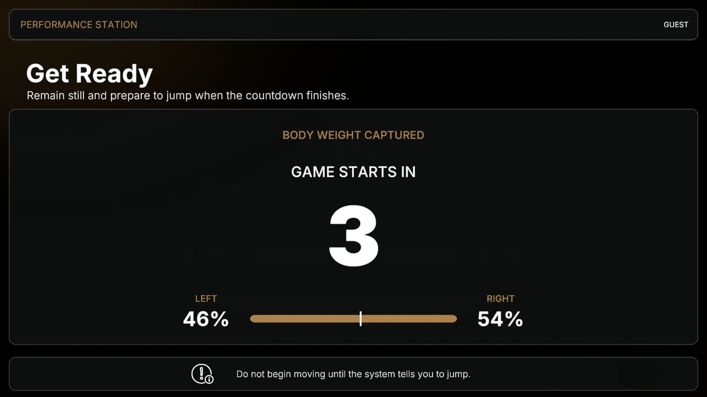
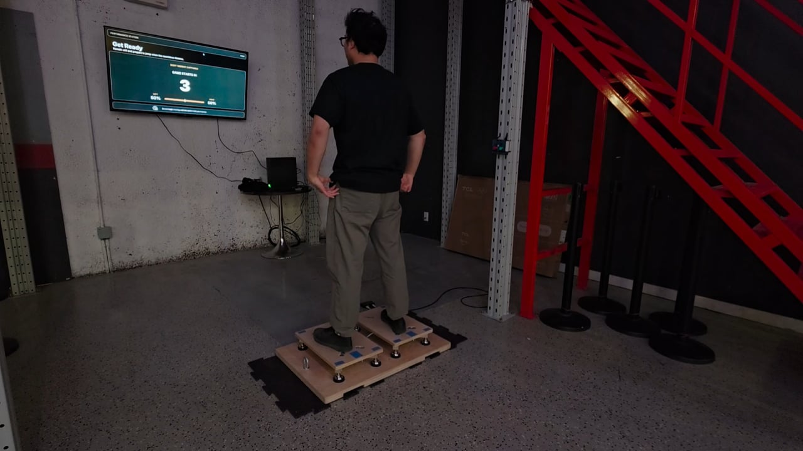
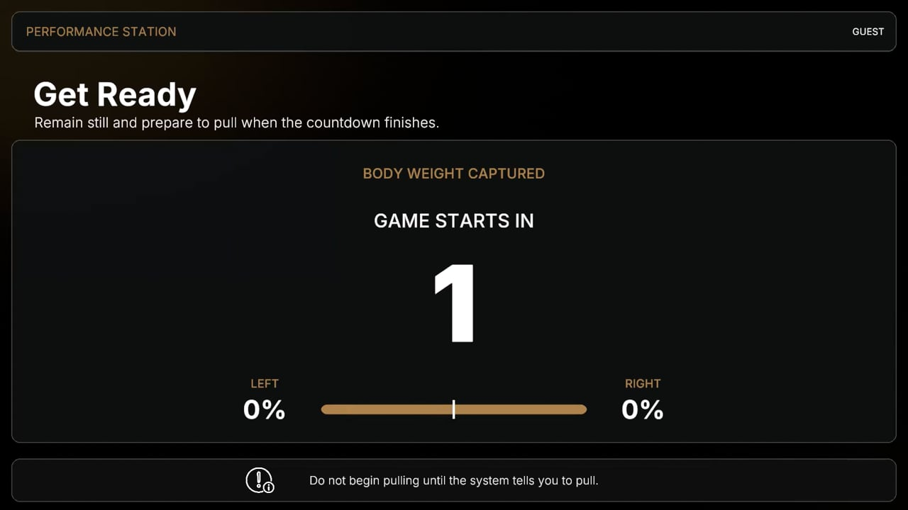
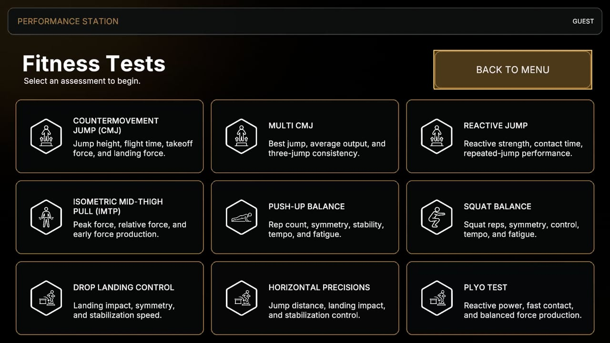

JUMPING / GAMESky Climber
01Make your jumps part of the adventure. A movement-driven challenge that turns each attempt into another reason to keep playing.
Turn physical effort into interactive play and measurable performance.
Movement games for members. Athletic tests for training.
Explore the experience ↓
THE STATION, IN ACTIONPHYSICAL EFFORT. ON-SCREEN RESPONSE.Jump into a challenge. Put effort behind every repetition. Give members a new way to practise, play, and challenge their personal best.

JUMPING / GAMEMake your jumps part of the adventure. A movement-driven challenge that turns each attempt into another reason to keep playing.

PUSH-UPS / GAMEBring play to a familiar exercise. Push-ups drive the on-screen action, with visible repetition counts and feedback throughout the challenge.
Give practice time another dimension with interactive physical challenges.
Connect movement with immediate on-screen feedback.
Personal scores create a clear target to return to.
Alongside the games, dedicated assessments give athletes and coaches performance metrics they can revisit over time.

CMJ / ASSESSMENT DEMOFrom elite training to everyday practice, one station is finding its place across the gym.
Elite athletes use performance metrics as a reference for their training. Athletes and general members also use the games to exercise and practise jumping and balance.
Breathe Parkour’s CEO reports that the station is hugely popular and used frequently throughout the day, during both training camps and walk-in practice.
Members report having fun, returning to improve their scores, and challenging themselves and their friends. Coaches are exploring how to incorporate the station into their programmes.
These early observations reflect feedback from Breathe Parkour’s leadership and members. Measured training outcomes have not yet been established; data collection is planned for the next phase.
We’re exploring early partnerships with gyms, courts, and training facilities to shape how Performance Station fits their members, spaces, and goals.